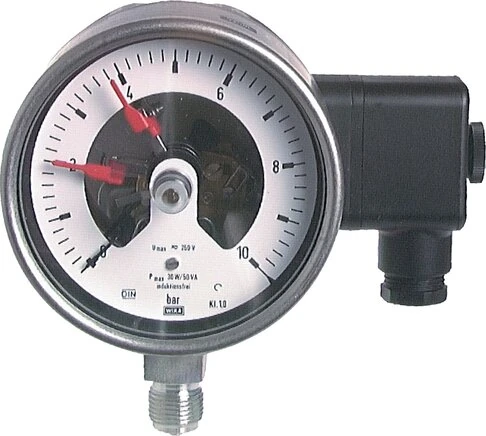

Đồng hồ áp suất có tiếp điểm (contact pressure gauge / Kontaktmanometer) vừa hiển thị áp suất, vừa đóng/ngắt tiếp điểm khi áp đạt ngưỡng đặt trước — dùng để cảnh báo hoặc điều khiển. Bài viết giải thích nguyên lý và cách đấu nối. Fast Group Engineering là đại lý cung cấp hàng chính hãng WIKA (Germany) tại Việt Nam.

Gợi ý chọn nhanh
- Cần cảnh báo hoặc điều khiển theo ngưỡng áp/lưu lượng.
- Cần cài setpoint, hysteresis hoặc tín hiệu switching.
- Cần bảo vệ máy nén, thủy lực hoặc mạch làm mát.
- Dải cài đặt, kiểu output và nguồn cấp.
- Kết nối cơ khí, kết nối điện và môi trường lắp.
- Áp/lưu lượng làm việc, chu kỳ đóng cắt và yêu cầu IP.
- Danh mục công tắc áp suất WIKA.
- Bài công tắc áp suất điện tử.
- Bài flow switch làm mát/bôi trơn.
Tóm tắt nhanh
- Contact gauge = đồng hồ áp suất + kim đặt ngưỡng (set pointer) + tiếp điểm.
- Khi kim đo chạm kim đặt → đóng/ngắt tiếp điểm để báo động/điều khiển.
- Loại tiếp điểm phổ biến: magnetic snap-action, inductive (an toàn khu vực nguy hiểm).
- Dùng cho bơm on/off, cảnh báo áp cao/thấp, khóa liên động.

Nguyên lý hoạt động
Trên mặt số có kim chỉ (measuring pointer) và một hoặc nhiều kim đặt ngưỡng (set pointer) chỉnh được bằng khóa phía trước kính. Khi áp suất đưa kim đo tới vị trí kim đặt, cơ cấu tiếp điểm chuyển trạng thái (đóng hoặc mở), gửi tín hiệu tới mạch điều khiển.
Các loại tiếp điểm
| Loại tiếp điểm | Đặc điểm | Ứng dụng |
|---|---|---|
| Magnetic snap-action | Nam châm hỗ trợ đóng dứt khoát, chống rung nhẹ | Điều khiển tải trực tiếp phổ thông |
| Inductive (slot sensor) | Không tiếp xúc cơ khí, dùng bộ khuếch đại | Khu vực nguy hiểm, tần suất đóng cắt cao |
| Sliding contact | Tiếp điểm trượt cơ bản | Tải nhỏ, đơn giản |
Cách đấu nối điều khiển
Contact gauge thường cung cấp tiếp điểm NO/NC để đưa vào mạch:
Contact gauge (NO/NC) → Relay/PLC input → Điều khiển bơm/van/đèn báo
- Cảnh báo áp cao: tiếp điểm đóng khi vượt ngưỡng → còi/đèn.
- Điều khiển bơm on/off: 2 kim đặt (low/high) để bơm chạy/dừng.
- Với tải lớn, dùng relay trung gian; không đóng trực tiếp tải công suất cao qua tiếp điểm nhỏ.
- Khu vực Ex → dùng inductive + bộ khuếch đại phù hợp.
Cách chọn (Checklist)
- [ ] Dải đo & Ø mặt (thường Ø100 để đủ chỗ tiếp điểm).
- [ ] Số lượng tiếp điểm và cấu hình NO/NC.
- [ ] Loại tiếp điểm: magnetic hay inductive (Ex).
- [ ] Thông số điện tiếp điểm (điện áp/dòng cho phép).
- [ ] Glycerin nếu có rung; wetted 316 nếu ăn mòn.
- [ ] Có cần safety pattern không (áp cao).
Contact gauge vs công tắc áp suất điện tử
| Tiêu chí | Contact gauge | Electronic pressure switch |
|---|---|---|
| Hiển thị | Kim cơ khí + tiếp điểm | Màn hình số + output |
| Chỉnh ngưỡng | Kim đặt cơ khí | Cài số, hysteresis linh hoạt |
| Chi phí | Thấp – trung bình | Cao hơn |
| Ứng dụng | Cảnh báo/điều khiển đơn giản | Điều khiển chính xác, tín hiệu số |
Cần cài đặt ngưỡng linh hoạt và tín hiệu số → xem bài Electronic pressure switch Heavy Duty.
Kiểu tiếp điểm 1, 2 hay 3 và cấu hình NO/NC
Contact gauge có thể trang bị một tới ba bộ tiếp điểm, cho phép nhiều ngưỡng trên cùng một đồng hồ. Ví dụ: một ngưỡng thấp báo áp tụt (mất bơm, rò rỉ), một ngưỡng cao báo quá áp. Mỗi tiếp điểm cấu hình dạng thường mở (NO) hoặc thường đóng (NC) tùy logic điều khiển. Lưu ý cấu hình NC thường được ưu tiên cho mạch an toàn vì khi đứt dây hay mất nguồn, mạch tự về trạng thái báo lỗi — nguyên tắc "fail-safe".
Ứng dụng thực tế
- Trạm bơm: hai kim đặt low/high điều khiển bơm chạy–dừng theo áp đường ống.
- Máy nén khí: cảnh báo quá áp bình chứa, dừng máy khi vượt ngưỡng an toàn.
- Lọc & đường ống: báo chênh áp cao khi lọc bẩn cần thay.
- Khóa liên động (interlock): ngăn thiết bị khởi động khi áp chưa đạt điều kiện.
Vì sao thường chọn mặt Ø100 hoặc Ø160?
Cơ cấu tiếp điểm và kim đặt cần không gian, nên contact gauge hầu như không làm cỡ nhỏ 40–63 mm. Mặt Ø100 mm là phổ biến nhất vì đủ chỗ bố trí tiếp điểm và dễ đọc; Ø160 mm dùng khi cần đọc từ xa hoặc lắp nhiều bộ tiếp điểm. Đường kính lớn cũng giúp chỉnh kim đặt chính xác hơn.
Lưu ý lắp đặt & bảo trì
Vì có phần cơ khí đóng cắt, contact gauge nên lắp ở nơi rung động vừa phải; nếu rung mạnh, chọn bản đổ glycerin để kim và tiếp điểm ổn định. Với môi chất có xung áp, thêm ống siphon hoặc snubber để bảo vệ Bourdon tube và tránh tiếp điểm "rung" gây tín hiệu giả. Định kỳ kiểm tra vị trí kim đặt và siết lại đầu đấu dây điện để đảm bảo tiếp điểm hoạt động tin cậy.
Sai lầm thường gặp
- Đóng trực tiếp tải công suất lớn: tiếp điểm nhỏ dễ cháy rỗ; luôn qua relay trung gian.
- Chọn dải đo quá rộng: kim đặt khó chỉnh chính xác quanh áp làm việc.
- Bỏ qua thông số điện tiếp điểm: vượt điện áp/dòng cho phép làm hỏng tiếp điểm.
- Dùng ở vùng Ex mà chọn tiếp điểm cơ: phải dùng inductive + bộ khuếch đại đạt chuẩn phòng nổ.
Thông số điện của tiếp điểm cần lưu ý
Tiếp điểm cơ khí trên contact gauge chỉ chịu được tải điện giới hạn. Khi thiết kế mạch, đối chiếu điện áp và dòng của tải với thông số cho phép của tiếp điểm; nếu vượt, bắt buộc dùng relay trung gian. Bảng dưới tóm tắt định hướng chọn theo loại tiếp điểm:
| Loại | Khả năng đóng cắt | Khi nào chọn |
|---|---|---|
| Magnetic snap-action | Tải nhỏ–vừa, đóng dứt khoát | Đèn báo, relay, van nhỏ |
| Inductive (slot) | Không tiếp xúc, cần amplifier | Vùng Ex, đóng cắt tần suất cao |
| Sliding contact | Tải rất nhỏ | Mạch tín hiệu đơn giản |
FAQ
Contact gauge đóng trực tiếp bơm được không? Nên qua relay trung gian; tiếp điểm chỉ chịu tải nhỏ.
Dùng ở khu vực có khí cháy được không? Dùng loại inductive với bộ khuếch đại phù hợp Ex.
Chỉnh ngưỡng thế nào? Xoay khóa trên kính để dịch kim đặt tới giá trị mong muốn.
Có mấy kim đặt trên một đồng hồ?
Tùy model, thường 1–3 tiếp điểm, cho phép đặt nhiều ngưỡng low/high trên cùng mặt số.
Contact gauge có cần nguồn ngoài không?
Bản tiếp điểm cơ (magnetic) chỉ đóng/ngắt mạch, không cần nguồn riêng; bản inductive cần bộ khuếch đại có nguồn.
Contact gauge có thay được cho công tắc áp suất điện tử không?
Trong ứng dụng cảnh báo/điều khiển đơn giản thì có, và rẻ hơn. Nhưng nếu cần cài ngưỡng chính xác bằng số, hysteresis linh hoạt và tín hiệu 4–20 mA về PLC, thì công tắc điện tử phù hợp hơn.
Cần báo giá contact gauge WIKA?
Gửi dải đo, số tiếp điểm, loại tiếp điểm, Ø mặt để nhận báo giá trong 24h.
- Email: minhduc@fastgroup.vn · Zalo: (+84) 938 888 958
Fast Group Engineering – đại lý cung cấp hàng chính hãng WIKA (Germany) tại Việt Nam.
Bài liên quan: [Đồng hồ áp suất WIKA là gì] · [Electronic pressure switch Heavy Duty] · [Safety pattern gauge] · [Chọn Ø mặt & ren]